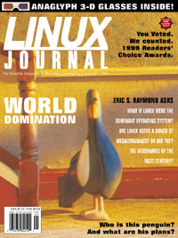

![[ Table of Contents ]](../gx/indexnew.gif)
![[ Front Page ]](../gx/homenew.gif)
![[ Prev ]](../gx/back2.gif)
![[ Linux Gazette FAQ ]](./../gx/dennis/faq.gif)
![[ Next ]](../gx/fwd.gif)
"Linux Gazette...making Linux just a little more fun!"

|
Contents:
|

 January 2000 Linux Journal
January 2000 Linux Journal
The January issue of Linux
Journal is on newsstands now.
This issue focuses on networks and communication, and has 3-D images
on the theme of World Domination.
Linux Journal has articles that appear "Strictly On-Line".
Check out the Table of Contents at
http://www.linuxjournal.com/issue69/index.html for articles in
this issue as well as links to the on-line articles.
To subscribe to Linux Journal, go to
http://www.linuxjournal.com/subscribe/index.html.
For Subcribers Only: Linux Journal archives are available
on-line at
http://interactive.linuxjournal.com/
Distro News
BlueCat
Lynx Real-Time Systems, Inc., has announced an open-source product and
support services initiative to extend Lynx into the emerging embedded Linux
market space. Starting immediately, and through the coming year, Lynx will
offer products and support services to address a broad range of embedded
software development under the Linux operating system.
The Lynx Linux Initiative (L2I) is supported by five elements:
* BlueCat Linux, a version of Linux
optimized for embedded applications developed by Lynx and
offered to the open
source community, available in January 2000.
* Version 4.0 of the LynxOS operating system with full binary compatibility
with Linux, available in mid-2000.
* A Lynx open development environment for the Red Hat Linux host, available
immediately.
* New technical support, consulting and training services for Linux
developers working in embedded applications, available immediately.
* Endorsements from more than 20 software and hardware vendors in the
embedded computing market.
The Lynx BlueCat Linux will be based on Red Hat Version 6.1, containing the
Linux 2.2.5-15 kernel, and will be shipped with the Lynx open development
environment capable of creating variations of the embedded Linux operating
system, according to user requirements. The BlueCat Linux development
environment will support cross development of Linux embedded applications using
a PC running Red Hat Linux as the development host.
Additionally, Lynx will extend Linux to include the industry-leading, high-availability technology currently available in Lynx solutions.
Corel
Ottawa, Canada - November 15, 1999 - Corel LINUX OS has been released.
There are three versions of Corel LINUX OS: the no-charge download
version, available today from Corel's Web site at www.corel.com;
the Standard version, which will sell for a suggested retail price
of US $59.95; and the Deluxe version, which will sell for a suggested
retail price of US $89.95. The Standard and Deluxe English versions
will start shipping in North America only on November 30, 1999 (international
release dates to be announced later).
Corel LINUX OS Download version includes the Corel LINUX OS (based
on Debian, www.debian.org, with the 2.2 Linux kernel); Enhanced KDE
Desktop (www.kde.org) built on Qt (www.troll.no); Corel Install Express;
Corel Update (formerly called Corel Package Manager); and Corel File Manager.
Corel LINUX OS Standard version includes three CDs. The main install CD
includes everything in the Download version, plus Netscape Communicator;
Adobe Acrobat Reader; Instant Messenger - ICQ compatible client;
20 Bitstream and Type 1 fonts; and Corel WordPerfect 8 for Linux
(light version). The second CD is the open circulation CD, which
contains those components from the main install CD that can be freely
copied without the need to purchase additional licenses. The final CD
is the open circulation source code CD. The Standard version also
includes Corel LINUX OS User Guide and 30-day installation support
(via email).
Corel LINUX OS Deluxe version includes everything in the Standard
version, plus two additional CDs. The application CD includes
BRU Backup software (personal edition) and Corel WordPerfect 8
clipart. The final CD contains Civilization: Call to Power game
(limited edition). Both of these CDs contain proprietary applications
that cannot be copied. The Deluxe verison also includes 200 Bitstream
and Type 1 fonts; Corel WordPerfect 8 for Linux (full version); 30-day
installation support (via email and phone); Corel WordPerfect 8 for
Linux User Manual; eFax Plus Service (three months free);
Enhanced OSS sound drivers (4Front Technologies); and a 3 ½-inch
Linux penguin mascot.
Corel will also offer developer support for Corel LINUX OS from www.corel.com in the next few weeks. Details on
this will be posted on this Web site shortly.
Debian
VA Linux To Help Bring Debian Package To Consumers.
VA Linux Systems announced this week that it will tap
Loki Entertainment Software to push the
Debian GNU/Linux package to consumers through
retail channels...
Red Hat
RH acquires Cygnus, names Matthew Szulik as president and CEO.
Bob Young will remain as chairman.
Red Hat and Dell Pump Up Linux Agreement
Storm
Vancouver, Canada--December 15, 1999--Stormix Technologies, Inc.
announces the release of Storm Linux 2000. Pre-orders are now
being taken for the Standard Edition, which ships December 15,
2000 at a price of $49.95US. The download edition is available
immediately at www.stormix.com . Retail
packages will be available shortly from major distributors.
Storm Linux 2000 builds on Debian
GNU/Linux, an older version widely known for its comprehensive
testing and stability.
The Standard Edition also includes 30 day telephone installation
support and 120 day e-mail support. In addition, users can
receive community support by joining the Stormix mailing lists at
www.stormix.com/community.
Storm Linux 2000 Standard Edition also includes:
Applixware Office 4.4.2 for Linux demo, PartitionMagic,
VMware 1.1 (a virtual machine that
allows the running of other operating systems, such as Windows,
from within Linux),
BRU Trial version (backup software), and Krilo (a strategy game by
-BlackHoleSun Software, Inc.).
SuSE
Las Vegas, NV -- 15 November 1999 -- SuSE Linux 6.3 launches December 1
with a new graphic installation program, making it even easier to get into
Linux now. With one DVD or six CD-ROMs, SuSE Linux provides a current and
consistent Linux operating system with over 1500 application programs
included. The cost is $US 49.95.
Users get a wealth of new software. SuSE Linux 6.3 includes 230 new
programs and demos as well as 180 updated packages. Hummingbird Excced,
the best X-server for Windows platforms, is included as a 60-day
evaluation version for Windows 95/98. With Excced, you can run Linux
programs under Windows on a Linux server. With the 30-day demo version of
VMware 1.1.1., you can run programs from different operating systems on
one computer - simultaneously. Users also get the demo versions of the
popular games "Civilization - Call to Power" and "Railroad Tycoon II."
News in General
News from The Linux Bits
The Linux Bits is suspended for the holidays but will resume
publication in January.
Upcoming conferences & events
8th International Python Conference for the
Python programming
language.
January 24-27, 2000. Arlington, VA.
http://www.python.org/workshops/2000-01/
LinuxWorld/Linux Expo (France). February 3, 2000.
Paris, France. (URL unknown)
Software Development Conference & Expo.
March 19-24, 2000. San Jose, CA.
http://www.sdexpo.com
"Libre" Software Meeting #1 (Rencontres mondiales du logiciels
libre), sponsored by ABUL (Linux Users Bordeaux Association).
July 5-9, 2000. Bordeaux, France.
French:
http://www.abul.org/rmll1-fr.html.
English:
http://www.abul.org/rmll1-uk.html.
The latest updates are on the
Linux Journal events page.
Frozen Linux (non-profit Linux directory)
I've created a linux directory site called frozenlinux at
www.frozenlinux.com. It's (of course) non-profit and in need of help... mainly
submissions. I believe all my cgi scripts and things like that work, and I have
(I think) most of the categories that it'll need defined already... I just
need people to submit sites to it. I have added some sites, but it's a very
time consuming task and I can't really make a directory myself. I'd appreciate
if you'd put a mention of it in your magazine or on your website, that would
really help to get the ball rolling.
New Age Entertainment requests input from the Linux community
New Age Entertainment Inc.--Toronto, Dec. 24th, 1999--
The time has come that the world recognizes the value of Linux over
Microsoft Operating Systems. We are creating a tightly integrated integrated
Operating System / Office Application Suite that will replace MicroSoft as
THE mainstream software company. The next step is to provide a viable
alternative to front and back-office programs and applications for the
desktop. Integration is the key word here.
To New Age, integration means input from the Linux Community. Already, the
business community has demonstrated considerable in this project. We value
your input, opinions, and development skills. They are necessary in order to
make this truley a Linux project rather than just a business deal. Voice
your opinion, you will be heard!
I am the project organizer, so contact me soon: kmastin@netcom.ca
Keith Mastin <kmastin@netcom.ca>.
SGI - Itanium
SUPERCOMPUTING '99, PORTLAND, Ore. (Nov. 15, 1999) SGI (NYSE: SGI)
today hosted a special session at the SuperComputing '99 conference
on the future of high-performance computing and demonstrated the
first-ever cluster based on the Intel IA-64 Itanium processor.
The event featured speakers from the National Computational Science
Alliance, Intel Corporation and SGI.
"The high-performance computing community is at a critical juncture
in its history. The community will either continue down its familiar
path of company proprietary software and RISC processor building blocks
or begin to move toward a new model of high-performance computing based
on commodity, high-volume parts and common software building blocks,"
said Larry Smarr, Director, National Computational Science Alliance
and its leading-edge site, the National Center for Supercomputing
Applications (NCSA). "The NCSA will aggressively pursue this new model."
Linux Links
If you haven't heard why VA Linux Systems' IPO made front-page news,
see
this short story. (Their ticker symbol "LNUX" raised some
eyebrows in the Linux community. Remember, folks, VA is not Linux. They are
just one company offering Linux-based products. On the other hand, perhaps
they will act as a counterbalance to Red Hat, who also wants to see itself as
synonymous with Linux in people's minds.)
Interview with Linus
Embedded Linux portal: news about
Linux in embeddedd systems.
Progressive Systems Linux firewall is free for personal use and to Linux
user groups.
The Hunger Site is a place where
you can donate food to the needy just by clicking. The cost is paid by their
advertisers.
Reference sites: www.linuxlinks.com
www.firstlinux.com
Linux: Windows competitor ... NOT! USA Today article about the difficulties
in using Linux.
www.programarama.com provides
comparisions of commercial and open-source software items. "Before making that
sometimes costly mistake of purchasing a software package you thought would
solve your problems, do your research!" The site invites companies to list
their Linux products at the site.
sourceXchange officially launched
December 7. SourceXchange is a site which matches up open-source developers
with those wishing to hire their services.
Software Announcements
LinuxCAD new features
As of 11/26/1999 , LinuxCAD development team
rolles out the 1.99 release, in new release of
LinuxCAD
the following important features were added:
- XREFs or external references , a special kind of a block
that may be located elsewhere in the filesystem as opposite
to normal block that must be present in the drawing itself ;
- AutoLisp compatible tool has been added ;
- major improvements have been done in LinuxCAD ADS where
more then 200 new functions were exposed for application
developers ;
- LinuxCAD ADS already have been used to implement custom
graphics and reporting (OLAP) tools on several Fortune 500
companies.
- Support for DWG format was significantly improved ;
- previously optional DXF import module was added in standard
basic version of LinuxCAD.
Currently LinuCAD is one of the major Linux Application tools,
it is used by thousands people worldwide.
PS. To your special consideration: it does not make sense to wait
for release of real AutoCAD for Linux from Autodesk Inc. Autodesk Inc. has a
strategic alliance with Microsoft and they will not do it , period.
The best and the fastest way to make the Autodesk to reconsider
their behaviour is to buy more copies of LinuxCAD !!!
Complete business solution - SITEFORUM Suite
SITEFORUM Suite is everything you could
imagine you would like to do with your web, come to life. Unlimited, Forums,
Chat, Contact Management, Shops, Catalogs and Shopping Carts (Jan1, 2000) and
intelligent email system, with centralized development, administrative and
access control functionality, all dynamic and database driven out of the box
ready to run on nearly any server/OS platform including Windows and Linux.
SITEFORUM Suite is complete and even includes its own Webserver and database
software!
Can you imagine, having your website fill in your contact database
automatically, replying to emails without your intervention or providing a self
perpetuating client support base with discussion forums, building a community
around your products and services? Engage in real time discussions with clients
on your website with live chat, automatically process orders and sales and many
more, distinctive features not available in any single solution, anywhere.
Thought-Treasure
WASHINGTON, DC - December 8, 1999 -
Signiform today announced the
release of ThoughtTreasure 0.00022, a new version of its comprehensive
natural language/commonsense platform for building question answering
services, information extraction systems, and world-aware
applications. ThoughtTreasure 0.00022 contains a natural language
parser and generator hooked up to a knowledge base and lexicon of
25,000 concepts, 55,000 English and French words and phrases, and
50,000 assertions.
New features of ThoughtTreasure 0.00022 include scripts, a web-enabled
knowledge base, and easy-to-use knowledge base flat files. Scripts are
machine-understandable representations of typical activities such as
going swimming or making a dinner reservation.
For more information on ThoughtTreasure, please visit
http://www.signiform.com/tt/htm/tt.htm
AVAILABILITY
The ThoughtTreasure server runs on Linux and supports Java and Python
clients. To download a copy of the ThoughtTreasure 0.00022
distribution for noncommercial use, visit
www.signiform.com/tt/htm/download.htm. For information about
obtaining a commercial license, contact
sales@signiform.com.
Other software
The Xi Graphics hardware-accelerated
3-D X-server supports more than thirty different
3D video cards.
HTMLDOC v1.8.2 produces indexed HTML, PDF
and PostScript files. GPL. Commercial support available for $99.
ILOG has ported its entire line of
embeddable optimization, visualization and rules engines in Java and C++ to Red
Hat and SuSE Linux, for use in e-commerce applications.
Sun is releasing a version of the
Java 2 Platform Standard Edition (J2SE) for Linux.
Quick Restore 2.6 is "the first
enterprise-ready, heterogeneous, network backup and recovery solution for Linux
servers".
This page written and maintained by the Editor of the Linux Gazette.
Copyright © 2000, gazette@linuxgazette.net
Published in Issue 49 of Linux Gazette, January 2000